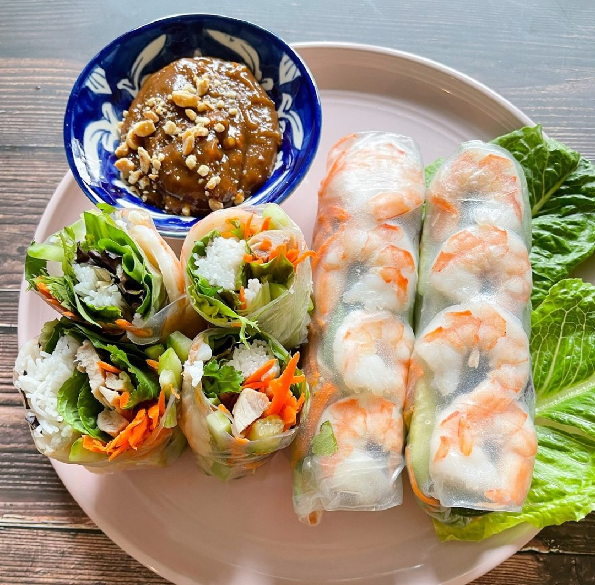

Spring Roll Recipes

Home
Spring Roll Recipes
To make fresh Vietnamese spring rolls, you’ll need rice paper wrappers, cooked shrimp or sliced pork (or both), thin rice vermicelli noodles, crisp lettuce, fresh herbs like mint, basil, and cilantro, and pickled vegetables such as cucumber and carrots. These ingredients are carefully wrapped together to create a light, refreshing roll. For the peanut butter dipping sauce, combine creamy peanut butter with hoisin sauce, a splash of soy sauce, minced garlic, and warm water to achieve a smooth consistency, then top it with crushed peanuts and a hint of chili for extra flavor.
Ingredients
- Shrimp
- Pork Belly
- Vermicelli
- Rice paper
- Pickled vegetables
- Peanut Butter
- Hoisin
- Hot to luke warm water
Steps
- Prepare the proteins
- Boil the pork belly until tender (about 30–40 minutes), then thinly slice.
- Boil shrimp until pink (about 2–3 minutes), peel, devein, and slice in half lengthwise.
- Cook the vermicelli noodles
- Boil water and cook vermicelli according to package directions (usually 3–5 minutes).
- Drain and rinse under cold water to prevent sticking.
- Set up your rolling station
- Place hot to lukewarm water in a large bowl or shallow plate.
- Lay out your rice papers, proteins, vermicelli, and pickled vegetables nearby for easy assembly.
- Soften the rice paper
- Quickly dip one rice paper wrapper into the warm water for 2–3 seconds.
- Place it flat on a clean plate or cutting board (it will soften as you assemble).
- Assemble the roll
- Lay 2–3 shrimp halves at the top center of the wrapper.
- Below the shrimp, place a few slices of pork belly.
- Add a small handful of vermicelli.
- Place a small amount of pickled vegetables on top.
- Fold the bottom of the rice paper over the filling, fold in the sides, and roll tightly toward the shrimp side.
- Make the peanut–hoisin dipping sauce
-
In a small bowl, combine:
- 2 tablespoons peanut butter
- 2 tablespoons hoisin sauce
- 2–3 tablespoons hot water (adjust for desired thickness)
- Stir until smooth. Top with crushed peanuts or chili if desired.
- Serve and enjoy
- Place your finished rolls on a plate.
- Serve with the peanut–hoisin dipping sauce on the side.
Results🍃
You’ll end up with fresh, colorful rolls that are chewy from the rice paper, light yet satisfying from the noodles and vegetables, and full of flavor from the shrimp and pork. The creamy, nutty dipping sauce adds richness and balances the freshness perfectly.